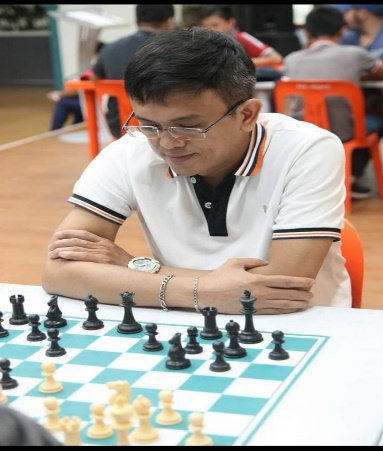

Player Information
Full Name: Darwin Laylo
Started Playing Chess: 5 years old
Hometown: Batangas City
Skills/Talents other than chess: Basketball
Affiliation to any other group/team: City of Dasmariñas Chess Team
Chess Title: Grand Master
Grand Master Darwin Laylo’s chess story started at the tender age of 5 years old with his father serving as his first teacher and mentor. 13 may have been his lucky number as he defeated the 13-time National Open Champ Grand Master Joey Antonio when he was just 13 years old.
Winning the 2004 National Open Chess Championship opened doors in his budding career, the most notable of which is his acceptance in the esteemed Philippine National Chess Team.
“Before I became part of the national team, I had to struggle financially, where I would get the budget to play in local and international tournaments, at the same time, balance my tournament play with my academics in school which fortunately I was able to balance.”
Apart from the monthly allowance that enables him to pursue his craft, Laylo also enjoys free exposure to local and international tournaments. These benefits are well deserved since he proves time and time again that he is one of the best in the game with achievements under his belt including Top 10 in the 2007 Asian Chess Championship and 2009 World Cup Qualifier in Khanty-Mansiysk, Russia.
In order to remain on top of his game, he dedicates 5-7 hours every single day studying chess openings and endgames.
Currently, lack of sponsorship remains to be one of the pressing issues the sport is facing. He notes that “training programs for the whole year and more exposure in international tournaments” can be achieved with more financial support for the sport.